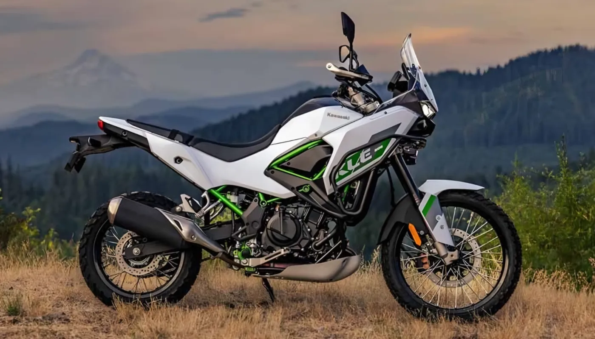
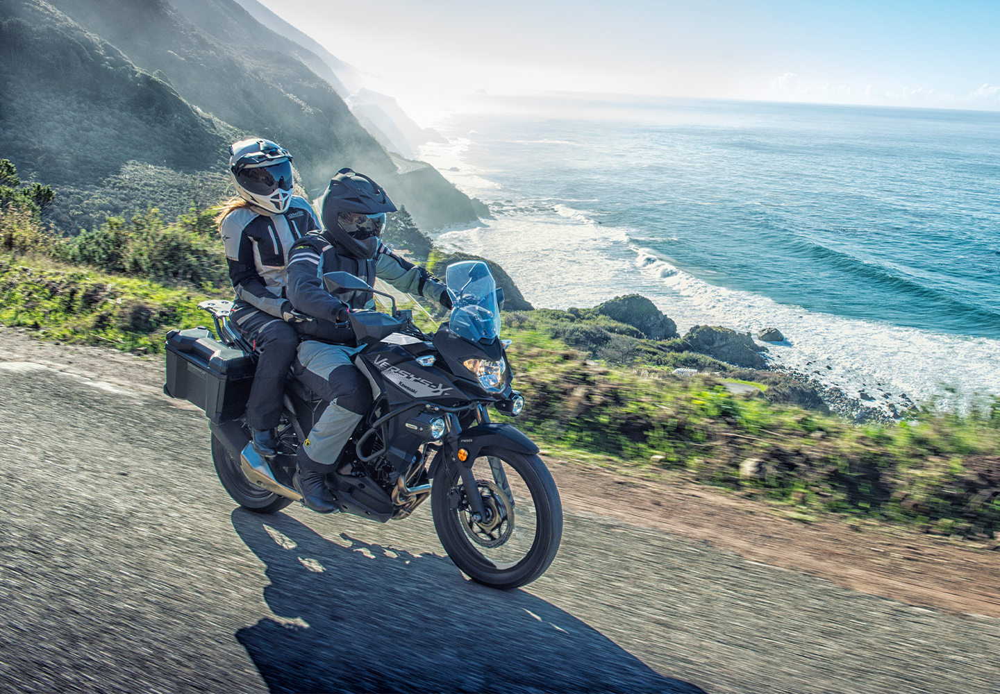

Ofertas e Promoções

Trackday
Os Track Days são eventos particulares de condução que ocorrem em autódromos e pistas de corrida oficiais. Eles são organizados por clubes, associações ou entusiastas, permitindo que motoristas e motociclistas comuns utilizem seus próprios veículos em um ambiente de pista, longe das restrições das vias públicas.

Trail
As motos trail destacam-se como veículos todo-terreno, projetadas para rodar suavemente pelas ruas e avenidas urbanas, ao mesmo tempo em que são capazes de superar obstáculos em estradas de terra ou pavimentos em condições adversas.

Touring
Estas motos são projetada especificamente para oferecer conforto, segurança e desempenho em longas distâncias. Essas motos são equipadas com diversas funcionalidades que proporcionam uma experiência de pilotagem mais agradável e segura, mesmo em trajetos longos.